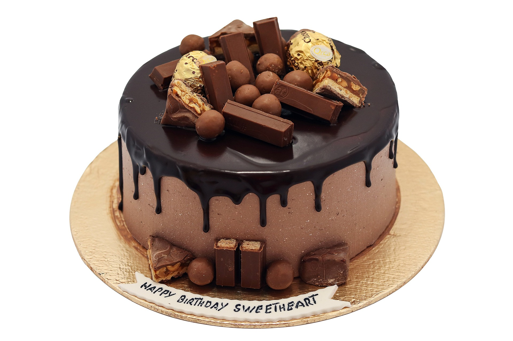

Bolo de Chocolate
| dificuldade | porções | tempo |
|---|---|---|
| fácil | 10 pedaços | 60 min |

ingredientes
- 3 ovos
- 1 e 1/2 (chá) de açúcar
- 2 xícaras de farinha de trigo
- 1 xícara de chocolate em pó
- 1/2 xícara de chá de óleo
- 1 colher de sopa de fermento
- 1 pitada de sal
- 1 xícara de água quente
modo de preparo
- bata no liquidificador os ovos, o açúcar, óleo, achocolatado e farihha de trigo, coloque a farinha aos poucos.
- despeje a massa em uma tijela e adcione a água quente, o sal e o fermento, misturando bem.
- despeje a massa em forma untada e asse em forno médio-alto(200) prequecido por 40 minutos.
- desenforme ainda quente.